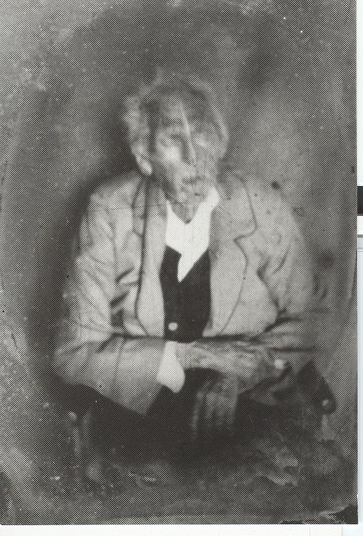

Here's a photograph of William Adams (1764-1860).
Anne Tindall inherited it from her mother. She relates the following history behind the photograph: "Apparently some time in the 50's my mother, Lucille Newton Gibson, great great granddaughter of William Adams (of four wives) questioned her "Cousin" Frank Adams (I'm not sure which Frank Adams as there are several!) about the Adams Family History. His response was that he knew very little, except the story of William being hanged and gave my mother this picture. According to his Obituary printed in the Southern Christian Advocate, submitted by B. J. A. in April 1860, William Adams was completely blind for more than the last twelve months of his life. In this picture he appears to be blind, but that's a guess on my part."